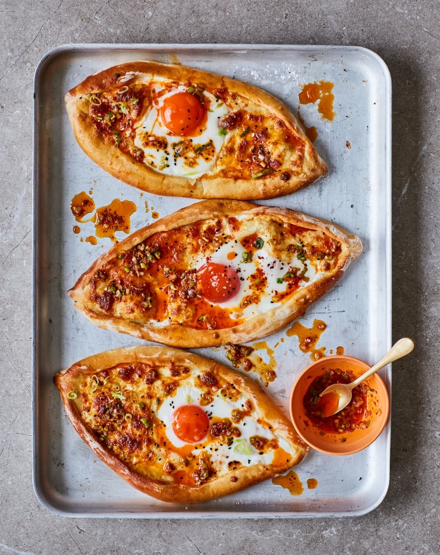

Adjaruli khachapuri with aleppo chilli and spring onion butter

Khachapuri is a Georgian yeasted bread filled with cheese, egg and butter. It’s usually served for breakfast, but don’t restrict yourself – it’s welcome all day. The dough can be made a day ahead, and refrigerated overnight, ready to be shaped before baking. Use medium or even small eggs here, because the white from a large one will just slide off the already cheese-filled khachapuris.
For the aleppo chilli and spring onion butter
Put the yeast, sugar and a tablespoon and a half of warm water in a small bowl, stir to combine and set aside for five minutes, until it starts to bubble. Put the flour, yoghurt, oil and one beaten egg in the bowl of a stand mixer fitted with a dough hook, mix well, then add the carom seeds, half the nigella seeds and three-quarters of a teaspoon of salt, and mix on a medium-high speed for two minutes, until just combined. Add the contents of the yeast bowl and mix for five minutes, until the dough turns smooth and starts to come away from the sides of the bowl in one ball. Cover tightly, ideally with reusable kitchen wrap, then leave in a warm place to prove for an hour and a half, until doubled in size.
Meanwhile, mix the cream cheese and mozzarella in a small bowl with the cracked black pepper, then divide into four equal pieces, roll each into a ball, put on a plate and chill in the fridge.
Heat the oven to 230C (220C fan)/475F/gas 9, and put a large baking tray on the middle rack to heat up.
Once the dough has doubled in size, scrape it on to a lightly floured work surface and knead to knock out the air and bring it together into a smooth ball. Divide the dough into four equal-sized balls, then roll out each one into a 22cm x 17cm oval. Brush the tops all over with the other beaten egg, then roll over the edges of the longer sides of each oval to make a cigar-like shape with an 8cm gap in the middle. Pinch together the ends, so each piece now looks a bit like a boat, then place one cheese ball in the exposed middle of each boat. Brush the exposed edges of the dough all over with the remaining beaten egg, then carefully lift each khachapuri on to the hot tray in the oven and bake for 13 minutes, until the cheese is bubbling and the bread golden brown.
Remove the tray from the oven, then flatten the hot cheese balls with the back of a spoon. Crack an egg on top of each flattened cheese ball, top each egg with a pinch of salt and return to the oven for five minutes, until the egg white is set but the yolk still runny.
Meanwhile, make the chilli and spring onion butter. Put a small saucepan on a medium-high heat, add the butter and, once it’s bubbling furiously, stir in the aleppo chilli. Take off the heat and stir in the spring onions and a pinch of salt.
Arrange the khachapuri on a large platter and sprinkle over the remaining quarter-teaspoon of nigella seeds. Spoon a tablespoon of the hot butter mix on top of each bread, and serve with the rest on the side for dipping.